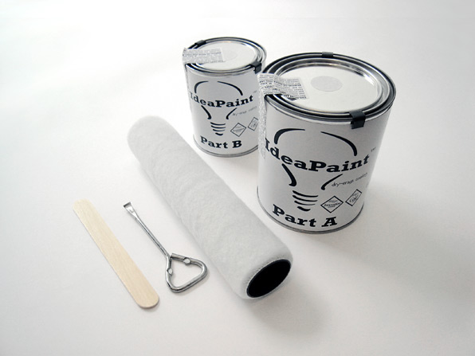

IdeaPaint helps you make ideas happen in the existing areas around your creative space or office. We recommend using IdeaPaint to boost productivity while brainstorming. By transforming your walls into useful space, you can track ideas, capture action steps, and bring order to the creative process.